Trace an MCP result from schema to decision
On this page
Back to implementation studies · Download the editable study


Use a read-only fixture to distinguish three checks: argument shape, result shape and application meaning. Test each check with a different counterexample.
Start offline
Work the case below before you inspect the original source. The
trace, exercise and worked answers are complete offline. The local briefing tool
gives you a related validation trace. Compare execute_tool
with the later checks in verify_evidence. The optional
upstream links at the end need an internet connection.
Work four results by hand
The fixture store contains part P7 with stock 4 and shelf B. Another
part has stock 7. The application needs stock for P7. Define a read-only
tool inventory_get with one required string argument,
part. Define an output object with required fields
part and units. Set units to an
integer with minimum zero.
Call the tool with part=P7. Evaluate these independent
results. In each case, record the schema seen by the client and whether
the tool marked an error.
| Result | Shape check | Application decision |
|---|---|---|
| Structured part P7, units 4 | Pass | Use 4 |
Structured part P7, units "4" |
Fail | Reject the result |
| Structured part P8, units 7 | Pass | Reject the mismatched identity |
| Error result with diagnostic text | Error path | Show controlled failure |
A reply that omits structured content is another failure for this declared output schema. A text block can help a human follow a transcript. It cannot satisfy this structured check by itself. In the Python SDK example, the error result skips normal output-schema validation. Keep that path visible until your application makes its own decision.
For a separate exercise, call the server with a missing
part. The server must apply input validation. If your app
validates inputs before dispatch, show which layer rejected the request.
Avoid a test that infers server behavior from an error the local
validator produced.
Inspect a change in the listing
Give the same tool a second schema that adds required field
shelf. Record when the client next lists tools. Compare a
validator built for the first shape with one built for the second shape.
A stored validator must correspond to the schema in use. The SDK evicts
the compiled validator when the refreshed listing changes the
schema.
The Python SDK example also shows recovery for a specific modern
protocol error. Client.call_tool can re-list and resend
once after HEADER_MISMATCH. Add that re-list and resend to
your trace. Treat a generic timeout as a separate case. A protocol error
with a defined recovery path does not imply that every failed call is
safe to repeat. This fixture tool reads data, so you can test retry
behavior without a write.
Adapt the client
Build a local validator exercise with a fake tool list and fake call results. Record the tool name, schema revision, call request ID, protocol error or tool error, and validation result. Add the four outcomes above, a missing structured result and a schema revision change.
Keep the result identity check after schema validation. Introduce a second tool with the same display title and a different tool name. Confirm that the client selects the schema by tool name for this fixture.
Check your solution
The app accepts only the requested part with valid units. It reports a tool error independently from a bad success result. The schema change invalidates the old validator. The second listing and any resend appear as distinct events. No call needs a live service.
Retrieve from memory
- When does the SDK call
validate_tool_result? - How can a result pass its schema and still be wrong?
- Which observation says the client used the new schema?
Show worked answers
- ClientSession calls it after a successful ordinary tool result. An error result goes through a separate path.
- The schema checks field shape. A valid string can name the wrong part.
- A new list response identifies the revised schema. A result that lacks the new shelf field must fail.
Optional source inspection
Read the MCP
2026-07-28 tools specification at “Listing Tools,” “Output Schema”
and “Error Handling.” Open the Python SDK client/session.py.
Search for call_tool, validate_tool_result,
_output_schema_validator and
_absorb_tool_listing. Read higher-level client/client.py
at Client.call_tool. The code uses mutable main links read
on 2026-11-20. The specification URL identifies a protocol revision.
Start from the list response. Draw the tool name, input schema,
output schema and result as distinct items. Follow what happens when
call_tool receives a successful ordinary result. It calls
validate_tool_result. That function can list tools if it
lacks the schema. A declared schema requires structured content. The SDK
checks the value against the schema and reuses a compiled validator for
that schema. Follow the path that replaces the cache entry on a changed
listing.